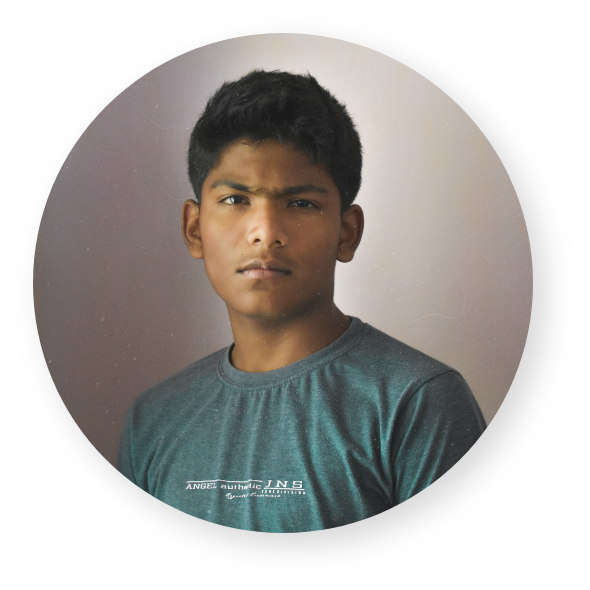
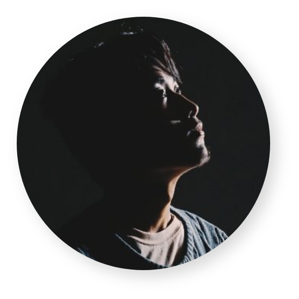

Anhelix
An IT guy turned rap superstar, Hurricane Matthews has been taking the southeast by storm with
hits like Creep Show, Matty Gigolo and his latest Billboard smash:
I Got Dreads Now. His debut album I Used to Get it in Ohio will be
available on all steaming platforms late 2019.
Cj21
Probably the most versatile artist on the IDK roster, B Heff excels just as much as a producer
as an artist. His producer credits include top tier artists such as Gucci Mane, Playboy Carti,
Lil Uzi Vert and more. When he's not in front of the computer banging out some beats, he's in
front of the microphone singing the draws off of your daughter.

Ngi Noi
Probably the most versatile artist on the IDK roster, B Heff excels just as much as a producer
as an artist. His producer credits include top tier artists such as Gucci Mane, Playboy Carti,
Lil Uzi Vert and more. When he's not in front of the computer banging out some beats, he's in
front of the microphone singing the draws off of your daughter.
HeRoCK
Hirak Pratim Majumder better known by his stage title HeRoCK is an electronic dance music producer from India,
Assam. Hirak began making music in 2017 inspired by mainstream DJ/Producers. He has been trying to spread his
thoughts through different EDM genres like Future Bass, Progressive House and Trap Music with his melodic and heavy bass sounds.